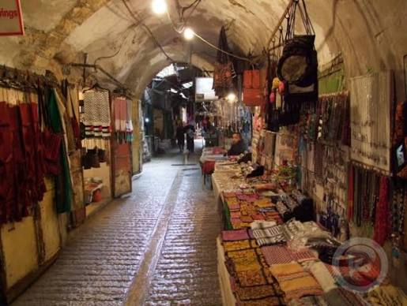
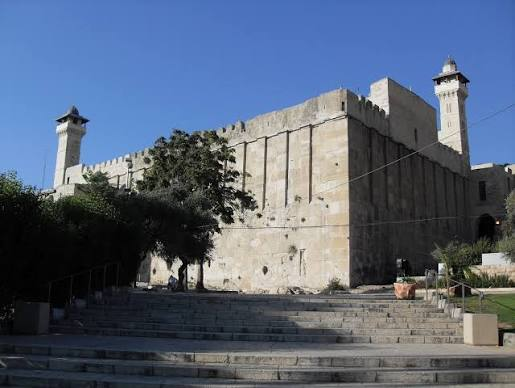
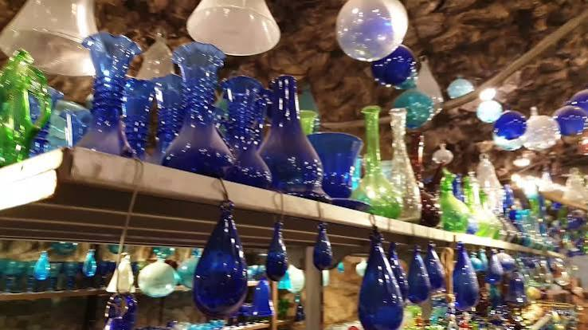
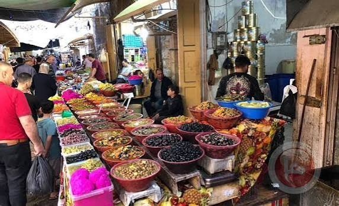

محتويات الصفحة
1. البلدة القديمة

تتميز البلدة القديمة بالأزقة الضيقة والمباني الحجرية والأسواق التقليدية، وتمنح الزائر صورة عن الحياة التراثية في المدينة.
مدة الزيارة المقترحة: 90 دقيقة.
للتعرف إلى معلومات تاريخية إضافية، اقرأ عن مدينة الخليل في ويكيبيديا.
2. الحرم الإبراهيمي

يعد الحرم الإبراهيمي من أبرز المعالم الدينية والتاريخية في الخليل، وله مكانة مهمة في تاريخ المدينة وتراثها.
مدة الزيارة المقترحة: 60 دقيقة.
3. صناعة الزجاج والخزف

تشتهر الخليل بالحرف اليدوية، ومنها صناعة الزجاج والخزف. ويمكن للزائر مشاهدة المنتجات الملونة والتعرف إلى مراحل صنعها عند توفر زيارة مناسبة.
مدة الزيارة المقترحة: 60 دقيقة.
خطوات مشاهدة الحرفة
- التعرف إلى المواد والأدوات المستخدمة.
- مشاهدة تشكيل القطع عند توفر فرصة لذلك.
- مشاهدة المنتجات النهائية والتعرف إلى زخارفها.
4. أسواق الخليل القديمة

تضم الأسواق محالًا لبيع المنتجات المحلية والأدوات المنزلية والأطعمة، كما تسمح بالتعرف إلى النشاط التجاري اليومي في المدينة.
مدة الزيارة المقترحة: 120 دقيقة.